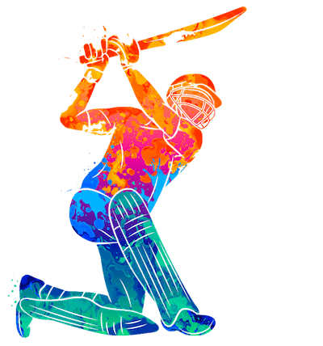
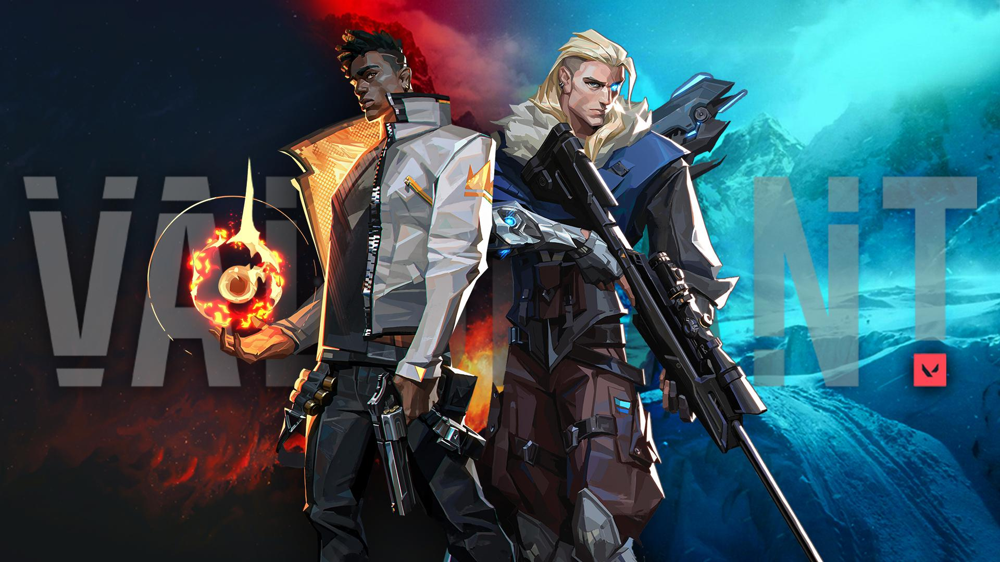
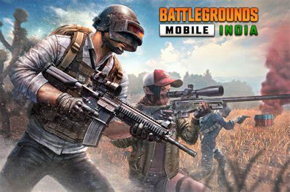

As A Web Developer, I Am Responsible For Designing And Developing Web Pages. My Primary Focus Is To Create Responsive, User-Friendly Experiences That Meet The Needs Of A Diverse Online Audience.
My Skills
Technologies I've been working with recently
Hobbies and Interests

I love to watch and play all sorts of Sports.
Especially, cricket and football.
If I have to talk about my favourite sportperson, it's definitely gonna be Virat Kohli and Lionel Messi.
I have captained my cricket side in Inter Department tournaments and in past, I was selected for District level Football team too.
Apart from involving myself in outdoor activities, I like to sit at a place and read Books, Novels, Comics, anything...
This is not some cliche interest that everyone writes in their resume.
I genuinely like to read. Some of the books which I have read are Moby Dick, Bone series comic, Alchemist, Palace of illusions, Crime Stories and few Romantic books too.


Best thing to do to refresh your mind is to sit with your gang and spend time with them. But you can't meet them often so playing online games with them is what helps.
I prefer spending time with them by playing Valorant, BGMI, and few other games too..
Clueless strategy, insulting each other, laughing at that one noob guy, these all things help me to forget about my all problems and refreshes my mind.
These hobbies and interests can describe alott about a person. If in my example, playing sports can tell you about my leadership qualities, how I manage to tackle the tricky situation and how I manage people in the team and motivate them to the victory.
Reading books, novels, shows apart from being energetic at sports, how calm I am and how sensible and patient I can be.
And playing online games doesn't actually mean anything. Kuch cheezein maze ke liye bhi karni chahiye!!